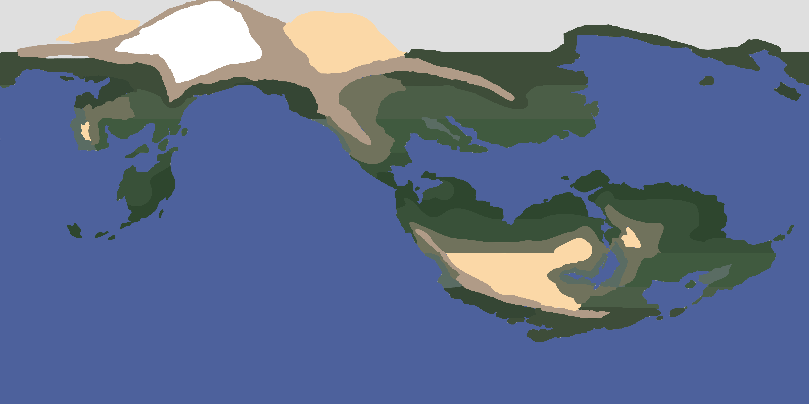

Nalduway

Nalduway is an Earth-like planet, ie one which a magnetic field that shields its surface from cosmic radiation and experiences tectonic processes, both important factors which allow the existence of carbon-based life.
Mass - Earth-like
Circumference - Earth-like
Axial Tilt - 22.5 (additional stability provided by multiple/larger moons?)
Composition: Terrestrial (composed primarily of metals and silicates)
Moons and Tidal Forces
Multiple moons in orbital resonance
Monthly moon (relatively close to a single earth month)
Seasonal moon (4-6 times a year)
Longer moon?
The Cosmic Landscape
[Cosmological Data found HERE]
Requirements [TEMP]
- Star is sufficiently bright for photosynthesis
- Star’s habitable zone exists long enough for complex life to evolve
- Sufficient material present for formation of earth-like planets
- Tidal stresses do not negatively effect planetary temperature or stability
- Planet must have an iron core to produce magnetic field, shielding life forms from radiation
- Planet must have sufficient mass and liquid water content for plate tectonics
- Only 10% of sunlike stars might have gas giants ,and they normally form outside the ice line, rarely hot jupiters migrate closer
- The Galaxy
- Galactic habitable zone = not so close to the active galactic core as to be bombarded by supernovae/radiation, not so far as to lack access to elements produced by supernovae
- Zone is small in young galaxies, and expands with age
The Galaxy
- Galactic habitable zone = not so close to the active galactic core as to be bombarded by supernovae/radiation, not so far as to lack access to elements produced by supernovae
- Zone is small in young galaxies, and expands with age
The Sun - Ytoh (Ito)
(From the Nierunic sun deity, Ytoh Tem (alt. Itoteim))
- Class: F8.7V
- Mass: 1.100 Msol
- Current Age: 4.500 Gyr
- Maximum Age: 7.513 Gyr
- Radius: 1.056 Rsol
- Luminosity: 1.464 Lsol
- Density: 0.935 Dsol
- Temperature: 6183 K
- Star Color: White
- Habitable zone: 1.154 - 1.662 AU
- Earth-like Life?: Yes
Planetary System
- Orbit 1: 0.35 AU / 52.36 million km [Mercury Analogue]
- Orbit 2: 0.57 AU / 85.27 million km [Planet TBD]
- Orbit 3: 0.79 AU / 118.18 million km [TBD]
- Orbit 4: 1.23 AU / 184.01 million km [Nalduway]
- Orbit 5: 2.11 AU / 315.66 million km [TBD]
- Orbit 6: 3.87 AU / 578.95 million km [Asteroid Belt]
- Orbit 7: 7.39 AU / 1,105.54 million km [Gas Giant]
- Orbit 8: 14.43 AU / 2,158.73 million km [Asteroid Belt]
- Debris Disk: 25.62 - 31.03 AU / 3832.41 - 4642.64 million km
{kind=link}